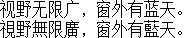

字样资料 / Sony PSP 中文BWFont
Sony PSP 中文BWFont · 16×18
28,427个映射槽、28,426个非空字形；非空基本区汉字20,902个及扩展A汉字6,582个，另有21个兼容汉字。GB2312汉字6,763/6,763、Big5基本区汉字13,061/13,061。只说明这些汉字集合，不扩称全部Big5符号、GB18030或Unicode。本文件没有U+0020–U+007E ASCII映射，不等于整个PSP系统没有西文字体。 · 16×18 · 简体、繁体
放大观察 · 3×

原尺寸 · 1×
拉丁字符／符号缺字：空格、!、"、#、$、%、&、'、(、)、*、+、,、-、.、/、0、1、2、3、4、5、6、7、8、9、:、;、<、=、>、?、@、A、B、C、D、E、F、G、H、I、J、K、L、M、N、O、P、Q、R、S、T、U、V、W、X、Y、Z、[、\、]、^、_、`、a、b、c、d、e、f、g、h、i、j、k、l、m、n、o、p、q、r、s、t、u、v、w、x、y、z、{、|、}、~。对应位置留空，不借用其他字体补齐。
来源与字样信息
- 家族
- Sony PSP 中文BWFont
- 排版说明
- 固定两行简繁样文保留16×18存储框和原像素，不裁成15宽、不补ASCII、不用全角英数替代。行间2px仅为展示排版。原Sony固件的advance、bearing和基线未核；不以intraFont的运行约定冒充原机实测，也不是PSP界面截图或原机布局复刻。
- 字符框
- 16×18 px
- 字面／墨迹
- 15×18 px
- 字符范围
- 简体、繁体
- 样本文字
- 视野无限广，窗外有蓝天。 視野無限廣，窗外有藍天。
- 覆盖说明
- 28,427个映射槽、28,426个非空字形；非空基本区汉字20,902个及扩展A汉字6,582个，另有21个兼容汉字。GB2312汉字6,763/6,763、Big5基本区汉字13,061/13,061。只说明这些汉字集合，不扩称全部Big5符号、GB18030或Unicode。本文件没有U+0020–U+007E ASCII映射，不等于整个PSP系统没有西文字体。
- 缺字
- 拉丁字符／符号缺字：空格、!、"、#、$、%、&、'、(、)、*、+、,、-、.、/、0、1、2、3、4、5、6、7、8、9、:、;、<、=、>、?、@、A、B、C、D、E、F、G、H、I、J、K、L、M、N、O、P、Q、R、S、T、U、V、W、X、Y、Z、[、\、]、^、_、`、a、b、c、d、e、f、g、h、i、j、k、l、m、n、o、p、q、r、s、t、u、v、w、x、y、z、{、|、}、~。对应位置留空，不借用其他字体补齐。
- 样张类型
- 官方6.61固件内原生1-bit中文点阵；16×18存储，最大汉字墨迹15×18。
- 风格
- 未分类
- 用途
- 设备界面
- 字形来源
- 从Sony官方非Go版PSP系统软件6.61更新包静态提取；包内版本记录为5553,0,3,1,0,6.61，01g名称表明确00489,flash0:/font/gb3s1518.bwfon。每槽36字节、16×18单色点阵，原行高位在左。不执行固件、不栅格化轮廓。本次锁定的是2015年6.61版本中的字节，PSP机型2004年发行不能作为字体制作日期。
- 授权状态
- 未确认开放再分发授权
- 许可说明
- 官方来源及第三方映射代码的许可不等于原字体开放再分发授权。仅展示固定小样图、来源说明和无字模离线重绘工具；不公开完整固件、BWFont、字模数组或字库子集。使用与再分发仍受原权利约束。
- 说明
- Unicode映射采用intraFont的165段压缩表，并与基于同表的Jpcsp实现相符；不是独立恢复的Sony官方查字逻辑。历史202、当前补充13及近期26层的完整同码位交集精确和±1px近似比较均未见高重复；实际覆盖196/241个收录前当前ID，仍有45个缺口，部分来源仅小样本。不是全目录查重或独立设计证明。
- 获取方式
自行取得有权处理且SHA匹配的本地BWFont及指定版本intraFont源码。工具只离线重绘已批准的固定两行PNG，不联网、不执行固件、不导出字体或字库子集。
- 来源
- Sony PSP系统软件官方支持页（2015存档）
- 原生证据
说明：官方PSAR静态提取435条记录、444个解码块的SHA1及双CMAC验证通过；档内名称表锁定目标。全部28,427槽逐位/逐行两路核对并字节回写一致；固定样文另作源到PNG逐像素回归。
source_sha256：05c9991fc82c96672026d5e71da595d0a5b028a74607d726e613099db8a3699a
sourceBytes：1023372
firmwareVersion：6.61
firmwareSampleYear：2015
mappedCharacters：28427
nonblankCharacters：28426
nonblankCjk：27484
basicHan：20902
extensionAHan：6582
compatibilityHan：21
gb2312Han：6763
big5Han：13061
big5ExpectedHan：13061
printableAscii：0
bitDepth：1
mappingSourceUrl：https://github.com/pspdev/libintraFont/blob/d461ba98e61e6f8f381c450c4774fb3e34d8600a/src/intraFont.c
mappingSourceSha256：3f8692c9c9e63ddb475cb7d0288c73354ca02a25d542bf421f3b9759a0f4a5b2
查看原生设计来源
字体使用与再分发按原来源许可执行。